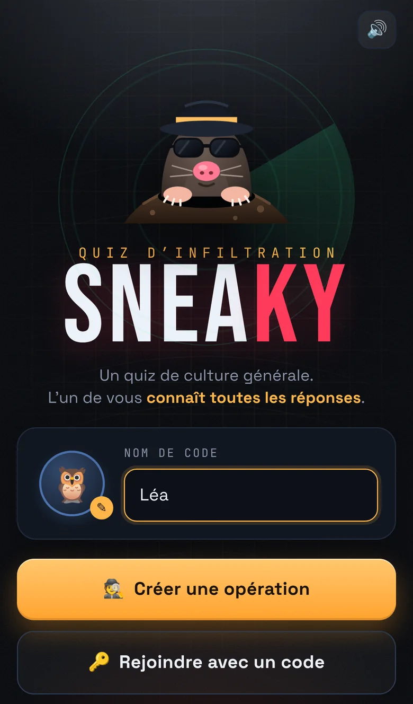
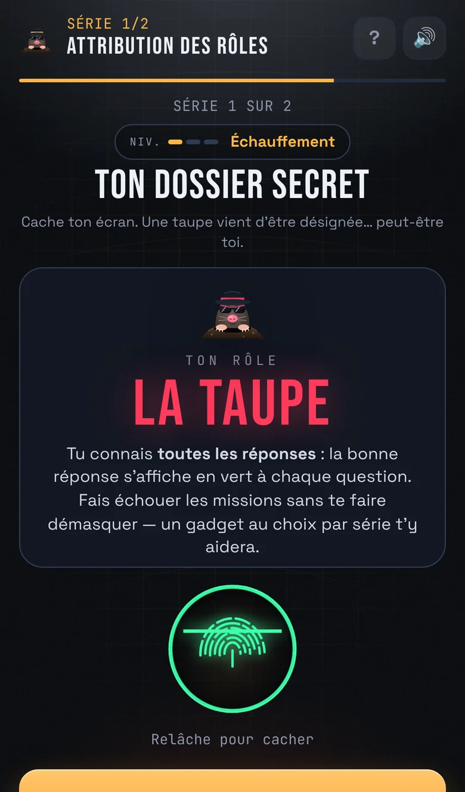
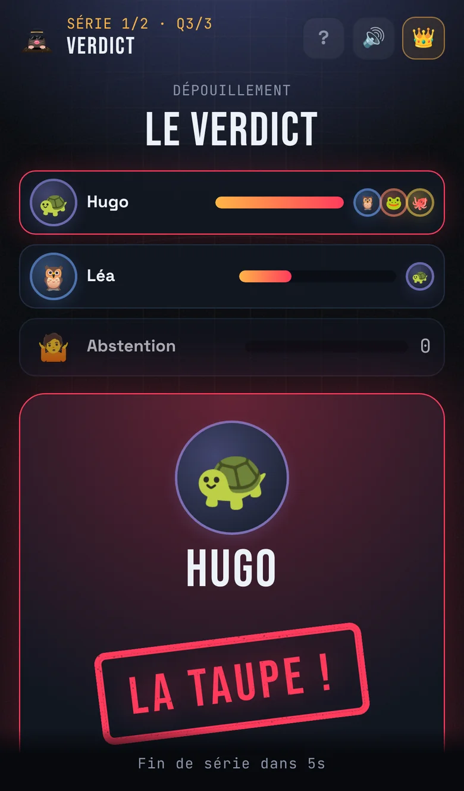
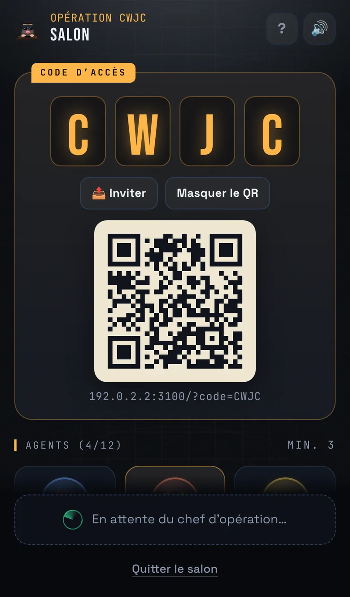
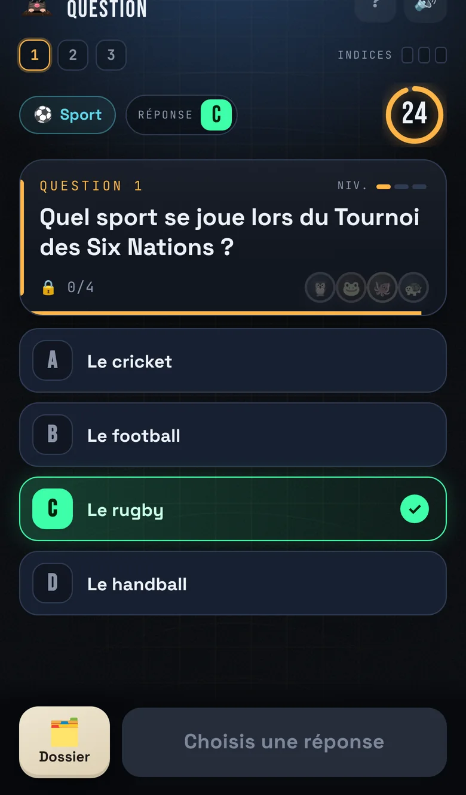
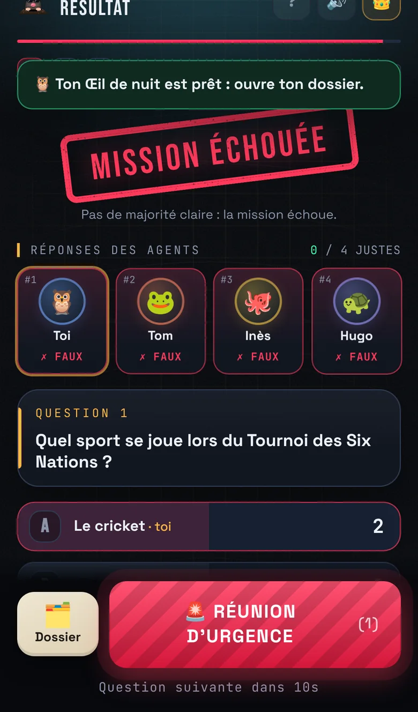
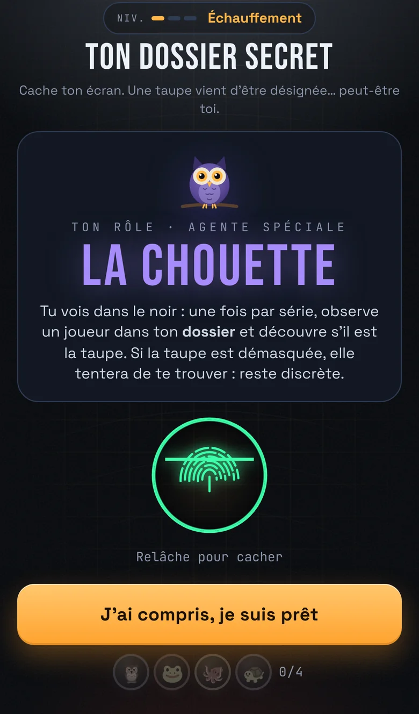
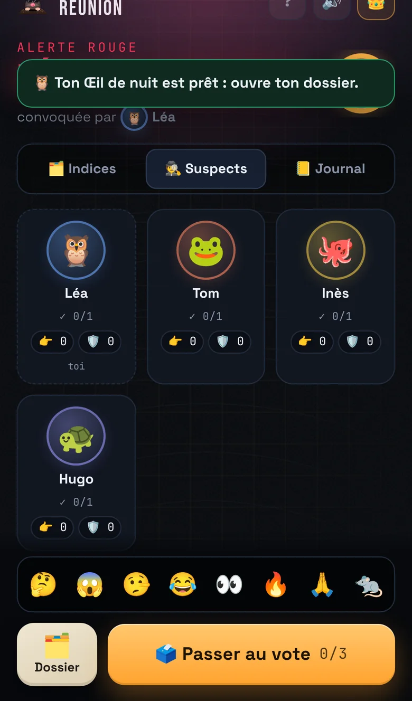
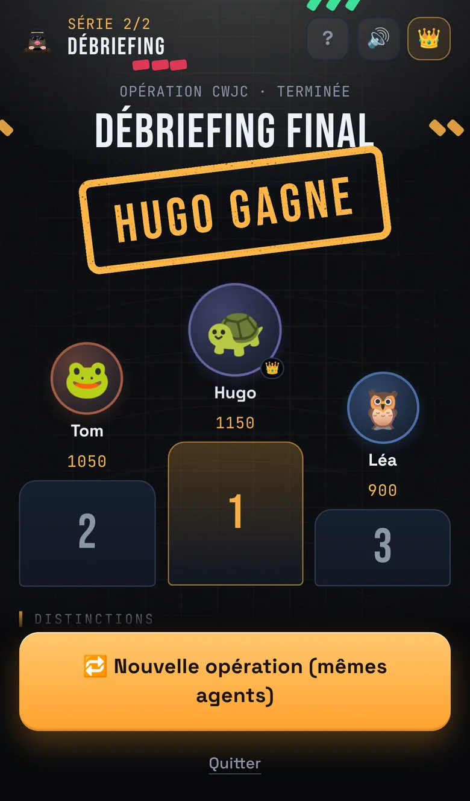
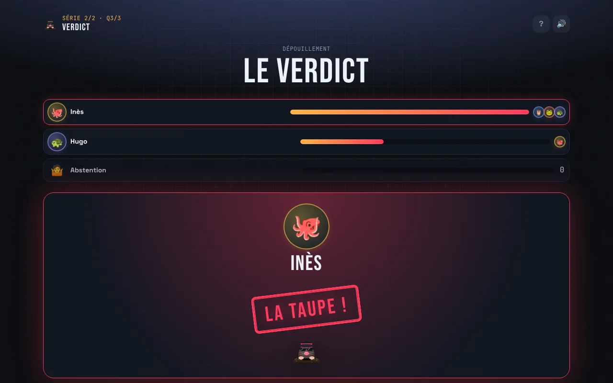

Étude de cas · Jeu multijoueur · 2026
Sneaky
Un quiz de culture générale à jouer dans la même pièce, chacun sur son téléphone. L’un des joueurs connaît toutes les réponses : à l’équipe de le démasquer.
- Rôle
- Concept, game design, identité, UX/UI, développement
- Support
- Web app installable sur téléphone, de 3 à 12 joueurs
- Année
- 2026
- En ligne
- sneaky-u6ig.onrender.com ↗



Le concept
« Un quiz de culture générale. L’un de vous connaît toutes les réponses. »
Sneaky croise deux jeux de soirée : le quiz, où l’on joue sa culture, et le jeu de rôle caché à la Loup-Garou, où l’on joue son bluff. Ici, l’équipe répond ensemble aux questions, et un joueur tiré au sort, la taupe, connaît toutes les bonnes réponses. Son but : faire échouer les missions sans se faire repérer.
Le téléphone sert de dossier secret, et la partie se joue à voix haute, autour de la table : on débat, on accuse, on se défend, puis on vote.
Une partie, étape par étape
- Le salonLe chef d’opération crée la partie. Les autres rejoignent avec un code à 4 lettres ou en scannant un QR code.
- Les rôlesChacun maintient le doigt sur un scanner d’empreinte pour découvrir son rôle en secret : agent ou taupe.
- Les questionsChaque question est une mission d’équipe, réussie si la réponse majoritaire est la bonne. La taupe voit la bonne réponse en vert sur son écran.
- Le tableau publicAprès chaque question, tout le monde voit qui a eu juste et qui a eu faux. Un joueur qui ne se trompe jamais devient suspect.
- Les réunions d’urgenceEntre deux questions, un agent peut convoquer une réunion pour débattre, accuser ou se défendre.
- Le voteEn fin de série, le joueur le plus voté est démasqué. Si c’est la taupe, les agents gagnent la série.






Gadgets, indices et Chouette
Pour que chaque série reste tendue, les deux camps ont des outils.
- Les gadgets de la taupe, un seul au choix par série : le brouillage rend les réponses illisibles 6 secondes sur tous les écrans, le coupe-chrono divise le temps par deux, la falsification glisse un faux indice dans la réunion suivante. Tout le monde sait qu’une pièce est truquée, sans savoir laquelle.
- Les indices des agents. Toutes les deux missions réussies, l’équipe débloque un indice : agent blanchi, message intercepté, périmètre de suspects.
- La Chouette, dès 4 joueurs : un agent secret qui peut observer un joueur par série et apprendre s’il est la taupe. Si la taupe est démasquée, elle a une dernière chance : désigner la Chouette pour lui voler 300 points.
- Une difficulté progressive. Les questions se corsent de l’échauffement à la série finale, sans devenir impossibles.






Le barème
Les points récompensent les deux façons de jouer : bien répondre et bien soupçonner. Les scores restent cachés pendant la série pour ne rien trahir.
| Action | Points |
|---|---|
| Bonne réponse (agent) | +100 |
| Voter contre la taupe | +200 |
| Taupe démasquée (chaque agent) | +100 |
| Faire écarter un innocent | −50 |
| Taupe : mission échouée | +150 |
| Taupe : non démasquée en fin de série | +300 |
| Taupe : démasquée | −200 |
| Taupe : Chouette capturée | +300 |
| Chouette : taupe démasquée sans être capturée | +150 |
L’écran plateau
Sur une TV, un ordinateur ou une tablette, le mode plateau affiche en grand le code du salon, les questions, les indices et les verdicts, sans jamais révéler de secret. Tout le monde regarde le même écran pendant le dépouillement.


L’identité
Tout l’univers vient du film d’espionnage. La mascotte est une taupe à chapeau et lunettes noires, qui joue sur le double sens du mot. Les rôles arrivent dans un dossier « Confidentiel » en papier kraft, s’ouvrent avec un scanner d’empreinte, et les verdicts tombent comme des coups de tampon : « Mission échouée », « La taupe ! ».
- Une couleur par camp. L’ambre guide l’action, le rouge signale la taupe et les échecs, le vert les bonnes réponses, le violet la Chouette.
- Une interface pensée pour la table. Gros boutons, textes courts, sons et vibrations à chaque étape, écran maintenu allumé pendant toute la partie.
- Titres
- Bebas Neue
- Interface
- Space Grotesk
- Codes
- JetBrains Mono
- Palette
- Nuit #07090D
- Ambre #FFB547
- Rouge #FF3B5C
- Vert #3DFFA8
- Violet #A78BFA
- Papier #EFE6D2
Sous le capot
- Interface en React et TypeScript, serveur Node avec Socket.IO pour le temps réel : tous les téléphones restent synchronisés à la seconde.
- Le moteur de jeu tourne entièrement sur le serveur. Chaque téléphone ne reçoit que ce que son joueur a le droit de voir : impossible de tricher en inspectant la page.
- 384 questions en 12 catégories, tirées sans doublon dans un même salon, plus les questions maison écrites par le chef d’opération.
- Application installable sur l’écran d’accueil, reconnexion automatique quand un téléphone se met en veille.
- 26 tests automatisés sur le moteur et le serveur, et une partie complète simulée sur 4 téléphones pour vérifier qu’aucun texte ne déborde.
- Hébergé sur Render. Sur l’offre gratuite, le serveur s’endort après 15 minutes sans visite et met une cinquantaine de secondes à se réveiller.
Outils : Claude (IA) pour le développement, Socket.IO, Render.